Sure Walk App
Sure Walk is a student-run safety service at the University of Texas at Austin that provides late-night rides to help students, faculty, and staff get home safely. Currently, the service is requested through a Google Form rather than a dedicated app. Our team explored how a mobile app could better support the Sure Walk experience by addressing usability, communication, and coordination challenges for both riders and employees.
- Problem
- Sure Walk’s late-night rides are requested through a Google Form that gives riders no confirmation, no pickup estimate, and no warning before a ride is cancelled.
- My role
- I designed and iterated on the ride-request and safety workflows, and redesigned onboarding and core UI flows. I also wrote Sure Walk’s tone-of-voice guide for app copy.
- What I did
- A survey of UT students and Sure Walk staff (32 responses) · 7 interviews with riders, drivers, navigators, and staff · a Service Safari, booking real rides ourselves · dispatcher shift observations · affinity mapping · “How might we” framing · sketches and low-fi wireframes · user interviews and cohort analysis · usability tests with 3 sponsored users
- Key decision
- Design the rider experience first, built around real-time wait times and ride status, because riders not knowing when pickup would happen was the biggest trust gap in the research.
- Outcome
- Not launched yet. We tested the first round of high-fidelity rider designs with 3 sponsored users, and we’re now designing an admin dashboard for Sure Walk staff, with a goal of launching by the end of the Fall 2026 semester. The research moved the team’s priorities to real-time wait-time visibility and clearer status updates.
- Success metrics
- Time to pickup · cancellation rate (especially no-show cancellations) · request completion rateMetrics we defined to measure success, not results achieved yet.
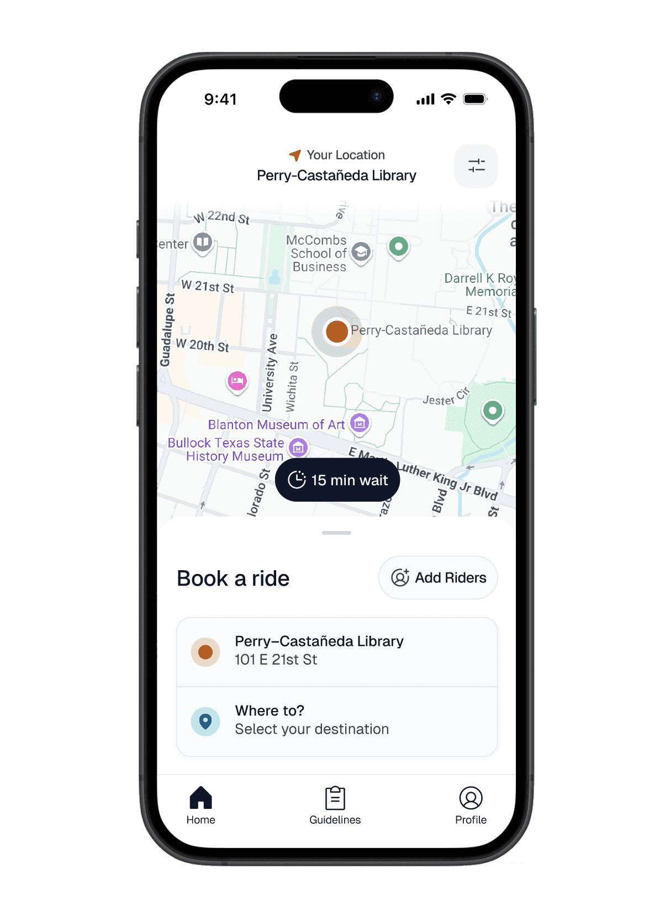
Challenge
The Sure Walk experience involves multiple parties, from riders, drivers, navigators, and dispatchers, each with different goals and pain points. The challenge was to understand where friction occurred across these roles, particularly in areas such as awareness, communication, and task flow, and to prioritize features that would meaningfully improve safety, usability, and operational efficiency within a single app experience. The stakes rise with demand: on rainy nights Sure Walk can get 200–300 ride requests, all coordinated by dispatchers through a Google Sheet and a group chat.
Outcome
The project is ongoing and the app hasn’t launched yet. We’ve tested the first round of high-fidelity rider designs with 3 sponsored users, and we’re now working on an admin dashboard for Sure Walk staff, with a goal of launching by the end of the Fall 2026 semester. So far, the research has changed what we’re building first. Instead of polishing the existing request form, we’re focusing on real-time wait-time visibility and clearer status updates, so riders know their request was received and when to expect pickup.
Research scope: a survey of UT students and Sure Walk staff (32 responses), 7 interviews with riders, drivers, navigators, and staff, a Service Safari where our team booked and rode Sure Walk ourselves, observations of dispatchers during live shifts, and usability tests with 3 sponsored users.
My contributions
- Redesigned the ride-request and safety workflows, iterating through usability tests with 3 sponsored users
- Redesigned onboarding and core UI flows, informed by user interviews and cohort analysis that surfaced friction points
- Partnered with engineers on implementation, documenting specs, interaction states, and edge cases
- Observed dispatchers during live shifts to understand how rides are confirmed, grouped, and assigned
- Wrote Sure Walk’s tone-of-voice guide for app copy, and am applying it to the ride-status notifications (rider assigned, on the way, arrived, with a pickup time warning)
Process
We surveyed UT students and current or former Sure Walk staff to understand usage patterns, awareness, and pain points across roles. Using affinity diagramming, we synthesized insights and developed “How might we” questions to guide feature prioritization. These insights informed early sketches and low-fidelity wireframes.
Grounding Design in Rider and Staff Needs
By engaging UT students alongside current and former Sure Walk staff, including riders, drivers, navigators, dispatchers, and non-users, we identified early breakdowns in awareness and usability that were affecting how people accessed and coordinated the service. These insights surfaced consistent confusion around how requests were submitted and tracked, especially through the Google Form system. This directly shaped our decision to prioritize clarity in request flow and end-to-end visibility across roles, rather than focusing on isolated UI improvements.
user groups represented: riders, drivers, navigators, dispatchers, and students who had never used Sure Walk.
interviews with riders, drivers, navigators, and Sure Walk staff, alongside a survey and live dispatcher observations.
recurring breakdown themes surfaced: awareness, communication, workflow coordination, and service transparency.
Mapping Needs Across Every Role
Because a single ride depends on several people doing their part, we looked at what each role needed from the system rather than designing for riders alone. This kept us from solving one group's problem by creating a new one for another.
Riders
Need confirmation that their request went through, an honest sense of when pickup will happen, and a heads-up before anything changes.
Drivers & Navigators
Need accurate pickup details and a reliable way to reach riders, so a missed connection doesn't turn into a cancelled ride.
Dispatchers
Need one shared view of incoming requests and ride status, without relaying information through side channels.
Non-Users
Need to know Sure Walk exists, who it's for, and how to request a ride before they're in a moment where they need one.
Tracing Today's Rider Journey
We walked through the current Google Form experience step by step to pinpoint where riders lose visibility. The biggest gaps weren't in submitting a request, but in everything that happens after.
Current experience, via Google FormFind the formRiders have to know the service exists and track down the link.
Submit a requestDetails go into a generic form with no ride-specific guidance.
Wait blindNo live status or pickup estimate once the form is sent.
Miss the windowIf the rider isn't out within two minutes, the ride can be cancelled with no notice.
Uncovering Systemic Issues Across the Service
Through affinity diagramming, we synthesized responses from all user groups and uncovered recurring breakdowns in communication, workflow coordination, and service transparency. This revealed a trust gap in the system's feedback loop, specifically around wait time transparency. It directly influenced our decision to prioritize real-time wait-time visibility and clearer status updates, ensuring riders could understand not just whether their request was received, but when they could actually expect pickup.
Awareness
Communication
Workflow Coordination
Service Transparency
No idea when the driver will arrive.
Sure Walk riderMy request got cancelled with no notification because I didn't show up within two minutes.
Sure Walk riderTurning Pain Points into Actionable Opportunities
We translated recurring pain points into a set of "How might we" questions that reframed issues into design opportunities. These guided prioritization across features, ensuring we focused on the most impactful breakdowns first, particularly around request clarity, coordination between roles, and reducing friction in ride scheduling.
Give riders a clear sense of when their ride will actually arrive?
Keep a request from silently disappearing when a rider is a minute late?
Help dispatchers and drivers coordinate without relying on side channels?
Connecting Insights to Design Priorities
Each priority traces back to a specific finding, which gave the team a shared rationale when deciding what to build first.
- Riders couldn't tell when pickup would happen → real-time wait estimates and ride status.
- Requests were cancelled without warning → proactive notifications before and after a ride changes.
- Staff relied on side channels → a shared request view connecting dispatchers, drivers, and navigators.
- Many students had never heard of the service → a clear, discoverable entry point in place of a buried form link.
Exploring Key Features Through Sketches and Wireframes
As a team, we sketched concepts for key features and aligned on initial design directions. These ideas were translated into low-fidelity wireframes to explore structure, core functionality, and primary user flows.
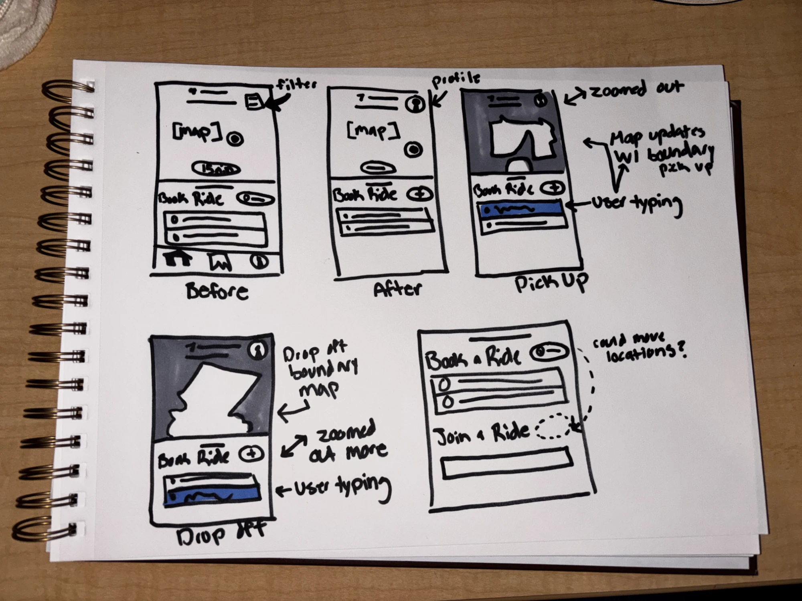
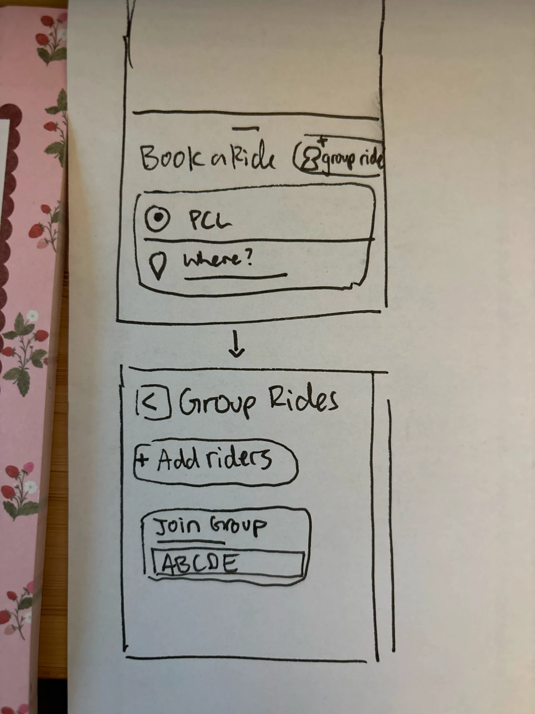
Iterating on the Booking Screen
The home screen changed across the sketches and into high fidelity. The second sketch tried a simpler screen, and the final design brought back what it removed.
Sketch: beforeFilter in the top cornerA filter icon sat above the map.
Bottom navigation barThree tabs ran along the bottom of the screen.
Profile in the top cornerThe filter became a profile icon.
No bottom navigationThe map and the Book Ride panel fill the screen.
Filter plus boundary togglesThe filter returned, and the pickup and drop-off boundary maps from the sketches became Pickup Boundary and Drop-Off Boundary toggles on the map.
Bottom navigation is backHome, Guidelines, and Profile tabs run along the bottom.
Refining Flows and Visuals Toward High-Fidelity Designs
The project is ongoing. We tested the first wave of high-fidelity designs with 3 sponsored users, and we’re currently iterating on flows and visual direction based on what we learned. Here are two flows from the prototype.
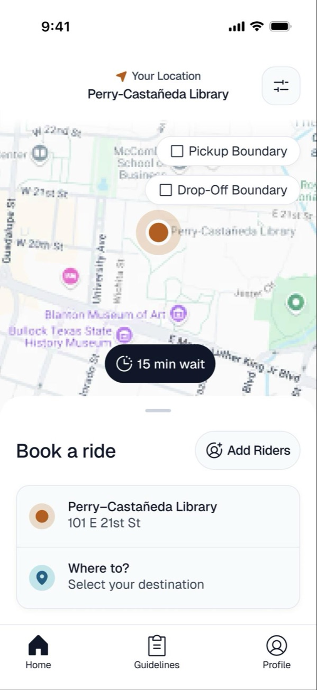
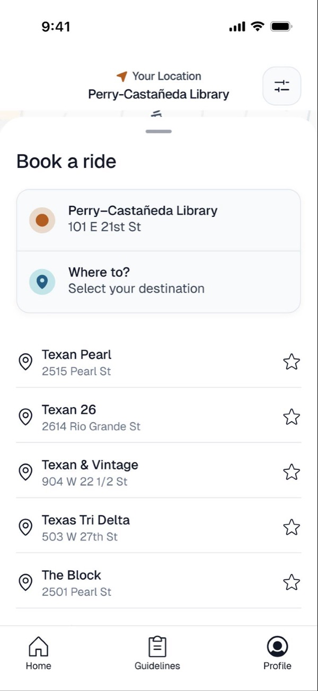
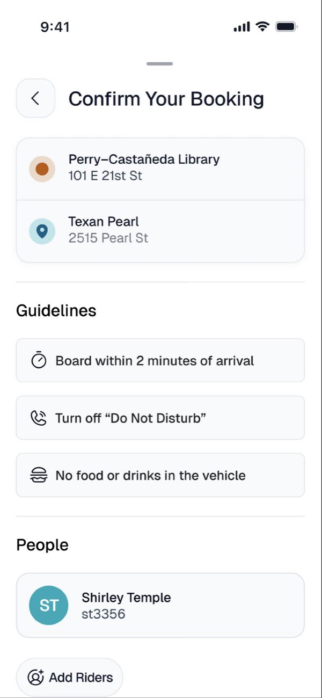
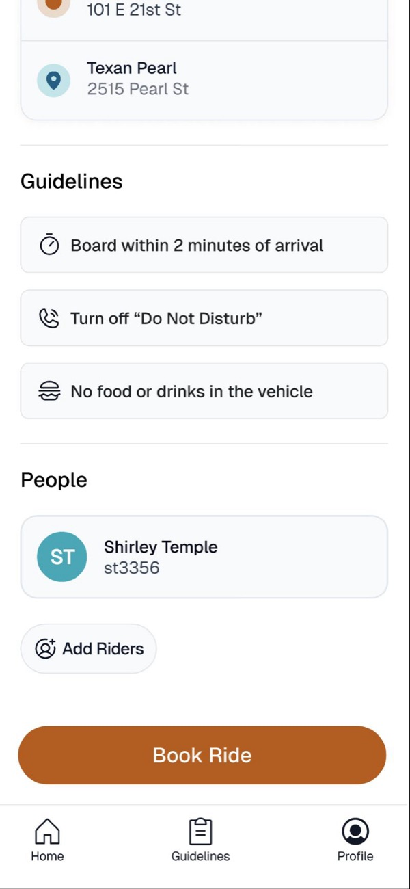
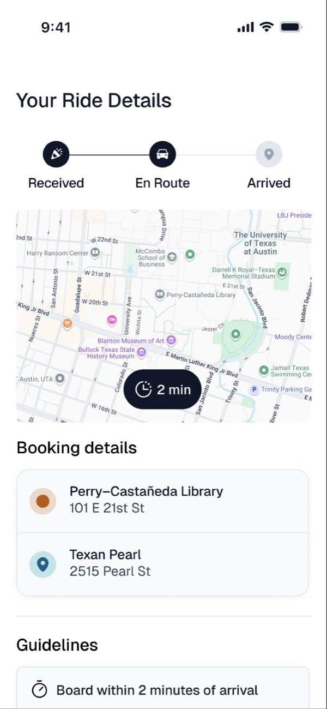
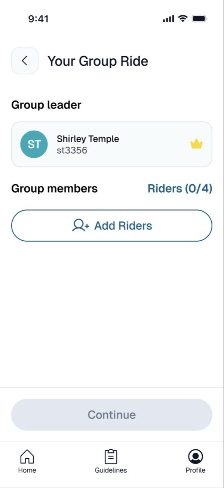
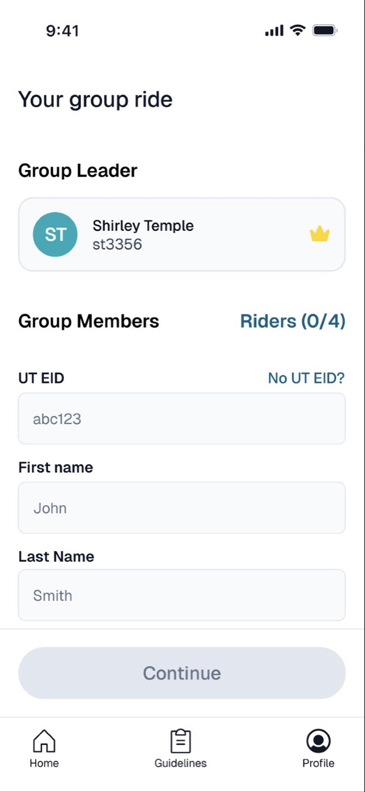
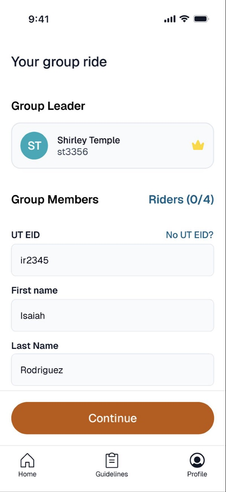
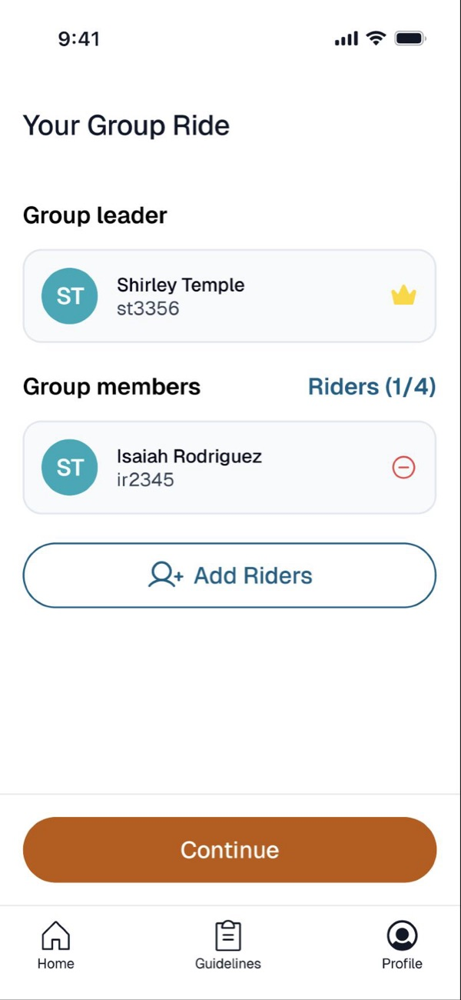
Content writing: the Sure Walk voice
Riders open Sure Walk late at night, often alone, and often anxious. The research showed that the biggest trust gap wasn’t a missing feature, it was silence: riders had “no idea when the driver will arrive,” and one rider’s request was cancelled without any notification. I wrote a tone-of-voice guide so every message in the app closes that gap by telling riders what is happening and what happens next.
Three Voice Principles
Transparent
Always explain changes, including cancellations, and tell riders about the next step in the ride early.
Clear
Give real time estimates instead of vague updates, so riders know how long they’ll wait.
Calm, not alarming
State facts steadily, even when a ride is delayed or cancelled.
Adjusting Tone to Each Moment of the Ride
The voice stays the same, but the tone shifts with what the rider is going through. Each moment has its own goal.
Where are you headed?
Your ride is estimated to arrive in 7 minutes.
Your driver has arrived, you have 2 minutes.
Your ride was cancelled. Would you like to request another ride?
The service is currently unavailable as it is outside of hours. We open at [time] today.
Choosing Words Riders Already Know
I aligned terminology with Parking & Transportation Services’ existing materials where it helped, and swapped in plainer words where it didn’t, so the app reads easily on a phone screen.
Writing Rules for Consistency
- Active voice, present tense: “Your driver is on the way.”
- Buttons start with a verb, use sentence case, and have no punctuation: “Request a ride.”
- Times are consistent: “12:30 a.m.” for clock times, “8 min” for waits, and estimates are always labeled as estimates.
- No exclamation points or emoji in status or safety messages.
- Errors say what happened, then what to do, and never blame the rider.
Prioritization & tradeoffs
- Built first: the rider flow (requesting a ride, seeing the wait time, and getting status updates), because that’s where the research showed trust breaking down.
- Next: an admin dashboard for Sure Walk staff, which we’re designing now that the rider side has been tested. We mapped staff needs early so the dashboard builds on that research.
- Why: Parking & Transportation Services, our client, made the rider experience its main focus, and riders were the group feeling the most visible pain in our research.
- Working with engineering: I partnered with engineers to document specs, interaction states, and edge cases, and adjusted designs to fit technical constraints.
Conclusion
This project highlighted the value of multi-stakeholder research for safety-critical services like Sure Walk. By engaging both riders and employees, we uncovered shared and role-specific pain points that helped ground design decisions in real operational needs. The app hasn’t launched yet, but these insights shaped the rider experience we’ve tested and now the staff admin dashboard we’re designing. Our goal is to launch by the end of the Fall 2026 semester.